CODING AGENTS AS PIXEL WORLD MODELS
traex/DeepSeek-V4.1-Flash · 0872_s4
点击播放 · 原生 RGB 像素
逐轮保存的候选
回放视频、检查图与代码变化。
每份候选均可单独播放。实际图片检查记录在下方工具轨迹中。
候选 01播放与检查图
点击播放 · 原生 RGB 像素

展开代码变化
--- 上一保存版本
+++ 本次保存版本
@@ -0,0 +1,221 @@
+"""Deterministic 2.5D animation of the supplied bear frame."""
+
+from pathlib import Path
+
+import cv2
+import numpy as np
+
+import artifact_io
+
+
+WIDTH = 256
+HEIGHT = 144
+FRAME_COUNT = 81
+FPS = 16
+
+
+def _largest_component(mask):
+ count, labels, stats, _ = cv2.connectedComponentsWithStats(mask, 8)
+ if count <= 1:
+ return mask
+ index = 1 + int(np.argmax(stats[1:, cv2.CC_STAT_AREA]))
+ return np.where(labels == index, 255, 0).astype(np.uint8)
+
+
+def _feather(mask, sigma):
+ return cv2.GaussianBlur(mask.astype(np.float32) / 255.0, (0, 0), sigma)
+
+
+def _build_masks(image):
+ """Find the warm bear silhouette and its articulated head region."""
+ rgb = image.astype(np.float32)
+ red, green, blue = rgb[:, :, 0], rgb[:, :, 1], rgb[:, :, 2]
+
+ warm = (red > green * 1.03) & (red > blue * 1.03) & (red > 35)
+ dark = (red < 75) & (green < 65) & (blue < 55)
+ candidate = ((warm | dark).astype(np.uint8) * 255)
+
+ roi = np.zeros((HEIGHT, WIDTH), np.uint8)
+ roi[30:144, 58:247] = 255
+ candidate &= roi
+ candidate = cv2.morphologyEx(
+ candidate, cv2.MORPH_CLOSE, np.ones((5, 5), np.uint8)
+ )
+ candidate = cv2.morphologyEx(
+ candidate, cv2.MORPH_OPEN, np.ones((3, 3), np.uint8)
+ )
+ bear = _largest_component(candidate)
+
+ head_poly = np.array(
+ [
+ (92, 40), (82, 42), (76, 46), (80, 52), (80, 58),
+ (77, 64), (80, 70), (77, 74), (82, 78), (86, 84),
+ (91, 89), (99, 93), (106, 92), (112, 87), (115, 82),
+ (119, 78), (121, 72), (117, 68), (124, 63), (123, 56),
+ (121, 48), (114, 43), (105, 44), (99, 43),
+ ],
+ np.int32,
+ )
+ fish_tail = np.array(
+ [
+ (116, 69), (123, 65), (133, 67), (143, 70), (149, 76),
+ (145, 82), (136, 84), (126, 82), (118, 79),
+ ],
+ np.int32,
+ )
+ head_region = np.zeros((HEIGHT, WIDTH), np.uint8)
+ cv2.fillPoly(head_region, [head_poly], 255)
+ fish_region = np.zeros((HEIGHT, WIDTH), np.uint8)
+ cv2.fillPoly(fish_region, [fish_tail], 255)
+
+ bear_soft = _feather(bear, 1.15)
+ head_core = ((head_region > 0) & ((bear > 0) | (fish_region > 0)))
+ head_alpha = _feather(head_core.astype(np.uint8) * 255, 1.7)
+ body_alpha = np.clip(bear_soft - head_alpha * 0.96, 0.0, 1.0)
+
+ # Inpainting supplies a plausible, textured plate around small body shifts.
+ background = cv2.inpaint(image, bear, 5, cv2.INPAINT_TELEA)
+ return bear, head_alpha, body_alpha, background
+
+
+def _warp_layer(image, alpha, matrix):
+ warped = cv2.warpAffine(
+ image,
+ matrix,
+ (WIDTH, HEIGHT),
+ flags=cv2.INTER_LINEAR,
+ borderMode=cv2.BORDER_REFLECT_101,
+ )
+ warped_alpha = cv2.warpAffine(
+ alpha,
+ matrix,
+ (WIDTH, HEIGHT),
+ flags=cv2.INTER_LINEAR,
+ borderMode=cv2.BORDER_CONSTANT,
+ borderValue=0,
+ )
+ return warped, warped_alpha
+
+
+def _animated_water(background, phase):
+ """Advect the photographed water with two scales of wave motion."""
+ yy, xx = np.mgrid[0:HEIGHT, 0:WIDTH].astype(np.float32)
+ depth = np.clip((yy - 23.0) / 20.0, 0.0, 1.0)
+ depth = depth * depth * (3.0 - 2.0 * depth)
+
+ slow = np.sin(xx / 19.0 - yy / 10.5 + phase * 1.35)
+ cross = np.sin(xx / 43.0 + yy / 18.0 - phase * 0.92)
+ fine = np.sin(xx / 7.5 + yy / 4.3 + phase * 2.25)
+ dx = depth * (1.35 * slow + 0.42 * cross + 0.28 * fine)
+ dy = depth * (
+ 0.50 * np.sin(xx / 26.0 - yy / 13.0 + phase * 1.12)
+ + 0.23 * np.cos(xx / 9.0 + phase * 2.0)
+ )
+
+ map_x = (xx - dx).astype(np.float32)
+ map_y = (yy - dy).astype(np.float32)
+ water = cv2.remap(
+ background,
+ map_x,
+ map_y,
+ interpolation=cv2.INTER_LINEAR,
+ borderMode=cv2.BORDER_REFLECT_101,
+ ).astype(np.float32)
+
+ # Broad moving glints make the water read as a surface, not a still backdrop.
+ glint = np.clip(slow * 0.55 + cross * 0.45, 0.0, 1.0) ** 5
+ glint *= depth * (0.30 + 0.70 * np.clip((yy - 68.0) / 76.0, 0.0, 1.0))
+ water += glint[:, :, None] * np.array([5.0, 6.0, 7.0], np.float32)
+
+ return np.clip(water, 0.0, 255.0)
+
+
+def _contact_ripples(frame, phase):
+ """Add low, broken rings where the bear's body meets the surface."""
+ yy, xx = np.mgrid[0:HEIGHT, 0:WIDTH].astype(np.float32)
+ ripples = np.zeros((HEIGHT, WIDTH), np.float32)
+ for cx, cy, sx, sy, strength in (
+ (83.0, 129.0, 16.0, 9.0, 1.0),
+ (193.0, 136.0, 22.0, 9.0, 0.72),
+ ):
+ radius = np.sqrt(((xx - cx) / sx) ** 2 + ((yy - cy) / sy) ** 2)
+ ring = np.sin(radius * 8.0 - phase * 4.2)
+ ring = np.clip(ring - 0.22, 0.0, 1.0)
+ decay = np.exp(-np.maximum(radius - 0.2, 0.0) * 1.25)
+ front = np.clip((yy - 117.0) / 10.0, 0.0, 1.0)
+ broken = 0.64 + 0.36 * np.sin(xx * 0.47 + yy * 0.31 + phase * 2.7)
+ ripples += ring * decay * front * broken * strength
+
+ ripple_color = np.array([24.0, 27.0, 28.0], np.float32)
+ frame += np.clip(ripples, 0.0, 1.0)[:, :, None] * ripple_color
+ return frame
+
+
+def _compose_frame(image, bear, head_alpha, body_alpha, background, t):
+ phase = 2.0 * np.pi * t
+ water = _animated_water(background, phase)
+
+ # The torso breathes and carries a small lateral weight shift.
+ body_dx = 0.52 * np.sin(phase / 4.9 + 0.20)
+ body_dy = 0.20 * np.sin(phase / 4.1)
+ body_scale = 1.0 + 0.0035 * np.sin(phase / 3.7)
+ body_matrix = cv2.getRotationMatrix2D((145.0, 109.0), 0.0, body_scale)
+ body_matrix[:, 2] += np.array([body_dx, body_dy])
+ body, body_a = _warp_layer(image, body_alpha, body_matrix)
+
+ # The head tugs at the fish, with a small secondary nod and twist.
+ head_angle = (
+ 1.65 * np.sin(phase / 3.35 - 0.45)
+ + 0.48 * np.sin(phase / 1.55 + 0.70)
+ )
+ head_matrix = cv2.getRotationMatrix2D((101.0, 85.0), head_angle, 1.0)
+ head_matrix[:, 2] += np.array(
+ [
+ 0.65 * np.sin(phase / 3.1 + 0.3),
+ 0.34 * np.sin(phase / 2.45 - 0.8),
+ ]
+ )
+ head, head_a = _warp_layer(image, head_alpha, head_matrix)
+
+ out = water
+ out = out * (1.0 - body_a[:, :, None]) + body.astype(np.float32) * body_a[:, :, None]
+ out = out * (1.0 - head_a[:, :, None]) + head.astype(np.float32) * head_a[:, :, None]
+
+ # A slow warm-light modulation across the scene.
+ light = 1.0 + 0.006 * np.sin(phase / 5.6 - 0.4)
+ out *= light
+ out = _contact_ripples(out, phase)
+
+ # Preserve photographic edge detail after the soft layer composites.
+ detail = image.astype(np.float32) - cv2.GaussianBlur(image, (0, 0), 0.75).astype(np.float32)
+ detail_weight = 0.12 * _feather(bear, 1.3)
+ out += detail * detail_weight[:, :, None]
+ return np.clip(out, 0.0, 255.0).astype(np.uint8)
+
+
+def generate():
+ image = cv2.cvtColor(
+ cv2.imread(str(Path(__file__).with_name("first_frame.png"))),
+ cv2.COLOR_BGR2RGB,
+ )
+ bear, head_alpha, body_alpha, background = _build_masks(image)
+
+ frames = np.empty((FRAME_COUNT, HEIGHT, WIDTH, 3), np.uint8)
+ frames[0] = image
+ for index in range(1, FRAME_COUNT):
+ frames[index] = _compose_frame(
+ image,
+ bear,
+ head_alpha,
+ body_alpha,
+ background,
+ index / FPS,
+ )
+ return frames
+
+
+if __name__ == "__main__":
+ case_dir = Path(__file__).resolve().parent
+ result = generate()
+ artifact_io.save(result, case_dir)
+ print(f"saved {result.shape} at {case_dir}")
候选 02播放与检查图
候选 03播放与检查图
点击播放 · 原生 RGB 像素

展开代码变化
--- 上一保存版本
+++ 本次保存版本
@@ -50,32 +50,36 @@
[
(92, 40), (82, 42), (76, 46), (80, 52), (80, 58),
(77, 64), (80, 70), (77, 74), (82, 78), (86, 84),
- (91, 89), (99, 93), (106, 92), (112, 87), (115, 82),
- (119, 78), (121, 72), (117, 68), (124, 63), (123, 56),
+ (91, 89), (99, 93), (106, 92), (112, 87), (117, 84),
+ (119, 78), (121, 72), (117, 68), (118, 63), (121, 58),
(121, 48), (114, 43), (105, 44), (99, 43),
],
np.int32,
)
- fish_tail = np.array(
- [
- (116, 69), (123, 65), (133, 67), (143, 70), (149, 76),
- (145, 82), (136, 84), (126, 82), (118, 79),
+ fish_poly = np.array(
+ [
+ (114, 71), (119, 67), (128, 66), (138, 68), (147, 71),
+ (151, 76), (147, 82), (137, 86), (127, 85), (119, 81),
+ (114, 77),
],
np.int32,
)
head_region = np.zeros((HEIGHT, WIDTH), np.uint8)
cv2.fillPoly(head_region, [head_poly], 255)
fish_region = np.zeros((HEIGHT, WIDTH), np.uint8)
- cv2.fillPoly(fish_region, [fish_tail], 255)
+ cv2.fillPoly(fish_region, [fish_poly], 255)
bear_soft = _feather(bear, 1.15)
head_core = ((head_region > 0) & ((bear > 0) | (fish_region > 0)))
head_alpha = _feather(head_core.astype(np.uint8) * 255, 1.7)
+ fish_core = (fish_region > 0) & ((bear > 0) | (fish_region > 0))
+ fish_alpha = _feather(fish_core.astype(np.uint8) * 255, 1.45)
body_alpha = np.clip(bear_soft - head_alpha * 0.96, 0.0, 1.0)
+ body_alpha = np.clip(body_alpha - fish_alpha * 0.88, 0.0, 1.0)
# Inpainting supplies a plausible, textured plate around small body shifts.
background = cv2.inpaint(image, bear, 5, cv2.INPAINT_TELEA)
- return bear, head_alpha, body_alpha, background
+ return bear, head_alpha, body_alpha, fish_alpha, background
def _warp_layer(image, alpha, matrix):
@@ -151,13 +155,13 @@
return frame
-def _compose_frame(image, bear, head_alpha, body_alpha, background, t):
+def _compose_frame(image, bear, head_alpha, body_alpha, fish_alpha, background, t):
phase = 2.0 * np.pi * t
water = _animated_water(background, phase)
# The torso breathes and carries a small lateral weight shift.
- body_dx = 0.52 * np.sin(phase / 4.9 + 0.20)
- body_dy = 0.20 * np.sin(phase / 4.1)
+ body_dx = 0.72 * np.sin(phase / 4.9 + 0.20)
+ body_dy = 0.26 * np.sin(phase / 4.1)
body_scale = 1.0 + 0.0035 * np.sin(phase / 3.7)
body_matrix = cv2.getRotationMatrix2D((145.0, 109.0), 0.0, body_scale)
body_matrix[:, 2] += np.array([body_dx, body_dy])
@@ -177,9 +181,24 @@
)
head, head_a = _warp_layer(image, head_alpha, head_matrix)
+ # The fish bends around the clamped head, lagging behind the jaw.
+ fish_angle = (
+ 2.15 * np.sin(phase / 3.35 - 1.0)
+ + 0.62 * np.sin(phase / 1.55 + 0.20)
+ )
+ fish_matrix = cv2.getRotationMatrix2D((116.0, 77.0), fish_angle, 1.0)
+ fish_matrix[:, 2] += np.array(
+ [
+ 0.95 * np.sin(phase / 3.35 - 0.65),
+ 0.46 * np.sin(phase / 3.35 - 1.25),
+ ]
+ )
+ fish, fish_a = _warp_layer(image, fish_alpha, fish_matrix)
+
out = water
out = out * (1.0 - body_a[:, :, None]) + body.astype(np.float32) * body_a[:, :, None]
out = out * (1.0 - head_a[:, :, None]) + head.astype(np.float32) * head_a[:, :, None]
+ out = out * (1.0 - fish_a[:, :, None]) + fish.astype(np.float32) * fish_a[:, :, None]
# A slow warm-light modulation across the scene.
light = 1.0 + 0.006 * np.sin(phase / 5.6 - 0.4)
@@ -198,7 +217,7 @@
cv2.imread(str(Path(__file__).with_name("first_frame.png"))),
cv2.COLOR_BGR2RGB,
)
- bear, head_alpha, body_alpha, background = _build_masks(image)
+ bear, head_alpha, body_alpha, fish_alpha, background = _build_masks(image)
frames = np.empty((FRAME_COUNT, HEIGHT, WIDTH, 3), np.uint8)
frames[0] = image
@@ -208,6 +227,7 @@
bear,
head_alpha,
body_alpha,
+ fish_alpha,
background,
index / FPS,
)
候选 04播放与检查图

候选 05播放与检查图
点击播放 · 原生 RGB 像素
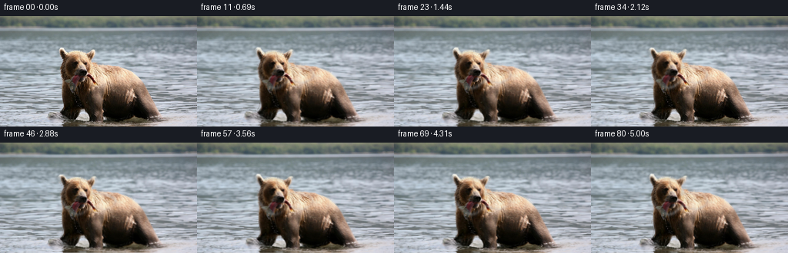
展开代码变化
--- 上一保存版本
+++ 本次保存版本
@@ -222,7 +222,7 @@
frames = np.empty((FRAME_COUNT, HEIGHT, WIDTH, 3), np.uint8)
frames[0] = image
for index in range(1, FRAME_COUNT):
- frames[index] = _compose_frame(
+ composed = _compose_frame(
image,
bear,
head_alpha,
@@ -231,6 +231,14 @@
background,
index / FPS,
)
+ # Ease away from the source during the first few frames. This removes
+ # the small discontinuity from the inpainted plate without a visible pause.
+ ramp = min(1.0, index / 5.0)
+ ramp = ramp * ramp * (3.0 - 2.0 * ramp)
+ frames[index] = np.rint(
+ image.astype(np.float32) * (1.0 - ramp)
+ + composed.astype(np.float32) * ramp
+ ).astype(np.uint8)
return frames
可观测工具轨迹
实际执行的命令与返回图片。
命令 1exit 0
/bin/bash -c "pwd && rg --files -g '"'!*.mp4'"' -g '"'!*.mov'"' -g '"'!*.webm'"' | sed -n '1,160p'"
命令 2exit 0
/bin/bash -c "printf '%s\\n' '--- media tools ---'; command -v ffmpeg; command -v ffprobe; command -v python3; command -v convert; command -v magick; printf '%s\\n' '--- workspace ---'; ls -la; printf '%s\\n' '--- image metadata ---'; file first_frame.png; identify first_frame.png 2>/dev/null || true"
命令 3exit 0
/bin/bash -c "printf '%s\\n' '--- prompt.txt ---'; sed -n '1,240p' prompt.txt; printf '%s\\n' '--- GENERATION_RULES.md ---'; sed -n '1,320p' GENERATION_RULES.md"
命令 4exit 0
/bin/bash -c "python3 - <<'PY'
from PIL import Image
import numpy as np
im=Image.open('first_frame.png').convert('RGB')
a=np.asarray(im)
print('size',im.size,'mode',im.mode,'dtype',a.dtype,'minmax',a.min(),a.max())
print('corners',a[0,0],a[0,-1],a[-1,0],a[-1,-1])
print('means rows',[(y,a[y].mean((0)).round(1).tolist()) for y in [0,10,30,50,70,90,110,130,143]])
PY"命令 5exit 0
/bin/bash -c "printf '%s\\n' '--- task_spec.json ---'; cat task_spec.json; printf '%s\\n' '--- artifact_io.py ---'; sed -n '1,260p' artifact_io.py; printf '%s\\n' '--- python modules ---'; python3 - <<'PY' mods=['numpy','PIL','cv2','scipy','skimage','imageio','torch'] for m in mods: try: x=__import__(m) print(m, getattr(x,'__version__','ok')) except Exception as e: print(m,'MISSING',e) PY"
命令 6exit 0
/bin/bash -c "python3 - <<'PY'
from PIL import Image, ImageDraw, ImageFont
im=Image.open('first_frame.png').convert('RGB')
# 4x crop with coordinate grid
crop=im.crop((55,20,255,144)).resize((800,496), Image.Resampling.NEAREST)
d=ImageDraw.Draw(crop)
for x in range(60,256,20):
X=(x-55)*4
d.line([(X,0),(X,496)],fill=(255,0,0),width=1)
d.text((X+2,2),str(x),fill=(255,255,0))
for y in range(20,145,20):
Y=(y-20)*4
d.line([(0,Y),(800,Y)],fill=(255,0,0),width=1)
d.text((2,Y+1),str(y),fill=(255,255,0))
crop.save('.tmp/annotated.png')
PY"命令 7exit 0
/bin/bash -c "python3 - <<'PY'
import cv2, numpy as np
from PIL import Image
im=cv2.imread('first_frame.png')
h,w=im.shape[:2]
poly=np.array([[75,51],[76,43],[82,38],[88,43],[94,42],[102,38],[109,42],[118,38],[123,49],[121,61],[128,66],[125,75],[119,81],[124,88],[110,94],[92,92],[80,88],[75,82],[73,72],[70,62]],np.int32)
body=np.array([[82,80],[75,90],[70,117],[78,139],[95,138],[104,110],[109,95],[120,95],[148,105],[178,120],[186,139],[211,136],[224,122],[225,103],[201,86],[178,72],[155,59],[132,51],[108,48],[85,54]],np.int32)
mask=np.full((h,w),cv2.GC_BGD,np.uint8)
mask[30:143,60:248]=cv2.GC_PR_BGD
cv2.fillPoly(mask,[poly],cv2.GC_PR_FGD)
cv2.fillPoly(mask,[body],cv2.GC_FGD)
# definite bg known water ring and background
mask[:26,:]=cv2.GC_BGD
mask[100:144,0:55]=cv2.GC_BGD
mask[30:144,245:]=cv2.GC_BGD
bgd=np.zeros((1,65),np.float64); fgd=np.zeros((1,65),np.float64)
cv2.grabCut(im,mask,None,bgd,fgd,8,cv2.GC_INIT_WITH_MASK)
fg=np.isin(mask,[cv2.GC_FGD,cv2.GC_PR_FGD]).astype(np.uint8)*255
# smooth alpha
fg=cv2.morphologyEx(fg,cv2.MORPH_CLOSE,np.ones((5,5),np.uint8))
fg=cv2.morphologyEx(fg,cv2.MORPH_OPEN,np.ones((3,3),np.uint8))
# largest comps near bear
num,labels,stats,cent=cv2.connectedComponentsWithStats(fg)
keep=np.zeros_like(fg)
for i in range(1,num):
if stats[i,cv2.CC_STAT_AREA]>80: keep[labels==i]=255
fg=keep
out=im.copy(); out[fg==0]=(out[fg==0]*.2+np.array([0,0,180])*.8).astype(np.uint8)
cv2.imwrite('.tmp/mask.png',fg)
cv2.imwrite('.tmp/mask_overlay.png',out)
print(stats[1:].tolist())
PY"命令 8exit 0
/bin/bash -c "python3 - <<'PY'
from PIL import Image
import numpy as np
im=np.asarray(Image.open('first_frame.png').convert('RGB'))
# print downsample ASCII by luminance and orange dominance
for y in range(20,144,4):
s=''
for x in range(50,250,4):
p=im[y:y+4,x:x+4].mean((0,1)); lum=p.mean()
# color labels: W water/bg, B bear tan, D dark
if p[0]>p[2]*1.25 and p[0]>70: c='B'
elif lum<55: c='#'
elif lum<85: c='d'
elif lum<120: c='.'
else: c=' '
s+=c
print(f'{y:3d} {s}')
PY"命令 9exit 0
/bin/bash -c "python3 - <<'PY'
from PIL import Image, ImageDraw
im=Image.open('first_frame.png').convert('RGB')
c=im.crop((60,28,150,100)).resize((900,720),Image.Resampling.NEAREST)
d=ImageDraw.Draw(c)
for x in range(60,151,5):
X=(x-60)*10; d.line([(X,0),(X,720)],fill=(255,0,0)); d.text((X+2,2),str(x),fill=(255,255,0))
for y in range(30,101,5):
Y=(y-28)*10; d.line([(0,Y),(900,Y)],fill=(255,0,0)); d.text((2,Y+2),str(y),fill=(255,255,0))
c.save('.tmp/head_grid.png')
PY"命令 10exit 0
/bin/bash -c "python3 - <<'PY'
import numpy as np
from PIL import Image
im=np.asarray(Image.open('first_frame.png').convert('RGB')).astype(float)
# report local color samples and edge gradient for mask segmentation
for y,x in [(48,90),(58,90),(66,90),(72,95),(80,100),(90,100),(100,90),(120,90),(140,200),(80,210),(50,230),(100,230),(50,40),(100,40),(20,128),(35,128)]: print((x,y),im[y,x].astype(int))
PY"命令 11exit 0
/bin/bash -c "python3 - <<'PY'
from PIL import Image,ImageDraw
im=Image.open('first_frame.png').convert('RGB'); c=im.crop((60,28,150,100)).resize((900,720),Image.Resampling.LANCZOS); d=ImageDraw.Draw(c,'RGBA')
pts=[(88,41),(78,43),(82,48),(91,45),(99,44),(106,46),(113,45),(119,50),(121,58),(117,65),(122,72),(117,80),(110,86),(103,90),(95,91),(86,88),(80,82),(77,76),(78,71),(72,70),(75,63),(78,59),(79,54),(80,49)]
xy=[((x-60)*10,(y-28)*10) for x,y in pts]
d.line(xy,fill=(255,0,0,255),width=3)
for i,(x,y) in enumerate(xy): d.ellipse((x-4,y-4,x+4,y+4),fill=(255,255,0,255)); d.text((x+5,y-8),str(i),fill=(255,255,0,255))
c.save('.tmp/head_poly.png')
PY"命令 12exit 0
/bin/bash -c "python3 - <<'PY'
import numpy as np
from PIL import Image
import cv2
im=np.asarray(Image.open('first_frame.png').convert('RGB'))
h,w=im.shape[:2]
r,g,b=[im[:,:,i].astype(float) for i in range(3)]
# Use manually robust zones: bear is warm/dark. Build a connected component around head/body seed.
warm=(r>g*1.03)&(r>b*1.03)&(r>35)
dark=(r<75)&(g<65)&(b<55)
cand=(warm|dark).astype(np.uint8)*255
# constrain around bear
roi=np.zeros((h,w),np.uint8); roi[30:144,58:247]=255
cand &= roi
# connect via morphology
cand=cv2.morphologyEx(cand,cv2.MORPH_CLOSE,np.ones((5,5),np.uint8))
cand=cv2.morphologyEx(cand,cv2.MORPH_OPEN,np.ones((3,3),np.uint8))
num,labels,stats,cent=cv2.connectedComponentsWithStats(cand)
seeds=[(90,48),(100,60),(90,90),(140,100),(200,120)]
keep=np.zeros_like(cand)
for x,y in seeds:
i=labels[y,x]
print('seed',x,y,'label',i,'stats',stats[i].tolist() if i else None)
if i: keep[labels==i]=255
cv2.imwrite('.tmp/warmmask.png',keep)
out=im.copy(); out[keep==0]=(out[keep==0]*.25+np.array([0,0,150])*.75).astype(np.uint8)
cv2.imwrite('.tmp/warmmask_overlay.png',out)
PY"命令 13exit 0
/bin/bash -c "python3 - <<'PY'
from PIL import Image,ImageDraw
im=Image.open('first_frame.png').convert('RGB'); c=im.crop((60,28,150,100)).resize((900,720),Image.Resampling.LANCZOS); d=ImageDraw.Draw(c,'RGBA')
pts=[(92,40),(82,42),(76,46),(80,52),(80,58),(77,64),(80,70),(77,74),(82,78),(86,84),(91,89),(99,93),(106,92),(112,87),(115,82),(119,78),(121,72),(117,68),(124,63),(123,56),(121,48),(114,43),(105,44),(99,43)]
xy=[((x-60)*10,(y-28)*10) for x,y in pts]
d.line(xy,fill=(255,0,0,255),width=3)
for i,(x,y) in enumerate(xy): d.ellipse((x-4,y-4,x+4,y+4),fill=(255,255,0,255)); d.text((x+5,y-8),str(i),fill=(255,255,0,255))
c.save('.tmp/head_poly2.png')
PY"命令 14exit 0
/bin/bash -c "python3 - <<'PY'
from PIL import Image
im=Image.open('first_frame.png').convert('RGB')
im.crop((75,35,135,95)).resize((600,600),Image.Resampling.NEAREST).save('.tmp/mouth_crop.png')
PY"命令 15exit 0
/bin/bash -c "python3 - <<'PY'
from PIL import Image,ImageDraw
im=Image.open('first_frame.png').convert('RGB'); c=im.crop((95,55,165,105)).resize((840,600),Image.Resampling.LANCZOS); d=ImageDraw.Draw(c,'RGBA')
for x in range(95,166,5):
X=(x-95)*12; d.line([(X,0),(X,600)],fill=(255,0,0,130)); d.text((X+2,2),str(x),fill=(255,255,0,255))
for y in range(55,106,5):
Y=(y-55)*12; d.line([(0,Y),(840,Y)],fill=(255,0,0,130)); d.text((2,Y+2),str(y),fill=(255,255,0,255))
c.save('.tmp/fish_grid.png')
PY"命令 16exit 0
/bin/bash -c "python3 - <<'PY'
import numpy as np, cv2
from PIL import Image
im=cv2.imread('first_frame.png')
# visual candidates: optical flow field from deterministic synthetic neighboring image for testing
# Instead show sharpen/details and LAB light zones
lab=cv2.cvtColor(im,cv2.COLOR_BGR2LAB)
L,a,b=cv2.split(lab)
clahe=cv2.createCLAHE(clipLimit=1.5,tileGridSize=(8,8)).apply(L)
cv2.imwrite('.tmp/clahe.png',cv2.cvtColor(cv2.merge([clahe,a,b]),cv2.COLOR_LAB2BGR))
PY"命令 17exit 0
/bin/bash -c 'python3 generate.py'
命令 18exit 0
/bin/bash -c "python3 - <<'PY'
from PIL import Image,ImageDraw
import numpy as np, cv2
frames=[]
for i in [0,10,20,30,40,50,60,70,80]:
im=Image.open(f'frames/{i:02d}.png').convert('RGB').crop((60,28,245,144)).resize((740,464),Image.Resampling.LANCZOS)
frames.append((i,im))
out=Image.new('RGB',(1480,464*4+84),(25,28,35)); d=ImageDraw.Draw(out)
for k,(i,im) in enumerate(frames):
x=(k%2)*740;y=(k//2)*(464+21)
d.text((x+6,y+3),f'frame {i:02d}',fill='white');out.paste(im,(x,y+21))
out.save('.tmp/large_sheet.png')
# motion stats
prev=np.asarray(Image.open('frames/00.png').convert('RGB')).astype(float)
for i in range(1,81):
a=np.asarray(Image.open(f'frames/{i:02d}.png').convert('RGB')).astype(float)
print(i,round(np.abs(a-prev).mean(),3))
prev=a
PY"命令 19exit 0
/bin/bash -c "python3 - <<'PY'
import cv2,numpy as np
from PIL import Image
im=cv2.imread('first_frame.png')
# Temporal pixel diff crop and difference frame
a=cv2.imread('frames/00.png'); b=cv2.imread('frames/10.png')
d=cv2.absdiff(a,b)
d=cv2.applyColorMap(np.clip(d*5,0,255).astype(np.uint8),cv2.COLORMAP_INFERNO)
cv2.imwrite('.tmp/diff10.png',d)
# show only water region for frame 10 enlarged
cv2.imwrite('.tmp/water10.png',cv2.resize(b[20:144,0:256],(1024,496),interpolation=cv2.INTER_NEAREST))
PY"命令 20exit 0
/bin/bash -c "python3 - <<'PY'
import numpy as np, cv2
im=cv2.cvtColor(cv2.imread('first_frame.png'),cv2.COLOR_BGR2RGB)
for y in range(63,90,3):
print('y',y,[(x,im[y,x].tolist()) for x in range(108,158,6)])
PY"命令 21exit 0
/bin/bash -c "python3 - <<'PY'
from PIL import Image
im=Image.open('first_frame.png').convert('RGB')
im.crop((108,65,165,100)).resize((1140,700),Image.Resampling.LANCZOS).save('.tmp/fish_zoom.png')
PY"命令 22exit 0
/bin/bash -c 'python3 generate.py'
命令 23exit 0
/bin/bash -c "python3 - <<'PY'
from PIL import Image,ImageDraw
import numpy as np
im0=np.asarray(Image.open('first_frame.png').convert('RGB'))
imf=np.asarray(Image.open('frames/00.png').convert('RGB'))
print('frame0 exact',np.array_equal(im0,imf),'maxdiff',np.abs(im0.astype(int)-imf.astype(int)).max())
print('shape',np.asarray(Image.open('frames/00.png')).shape)
# fish and head crops across time
out=Image.new('RGB',(1000,5*300),(25,28,35));d=ImageDraw.Draw(out)
for k,i in enumerate([0,10,20,30,40,50,60,70,80]):
im=Image.open(f'frames/{i:02d}.png').convert('RGB').crop((68,34,160,100)).resize((368,264),Image.Resampling.NEAREST)
x=(k%3)*334;y=(k//3)*300
d.text((x+4,y+2),f'frame {i:02d}',fill='white');out.paste(im,(x,y+20))
out.save('.tmp/head_fish_sequence.png')
# create preview video with OpenCV codec
import cv2
v=cv2.VideoWriter('.tmp/preview.mp4',cv2.VideoWriter_fourcc(*'mp4v'),16,(256,144))
for i in range(81): v.write(cv2.cvtColor(np.asarray(Image.open(f'frames/{i:02d}.png').convert('RGB')),cv2.COLOR_RGB2BGR))
v.release()
print('wrote preview.mp4')
PY"命令 24exit 0
/bin/bash -c "python3 - <<'PY'
import json, numpy as np, cv2
from pathlib import Path
from PIL import Image
spec=json.loads(Path('task_spec.json').read_text())
d=np.load('pixels.npz')
print('keys',d.files)
p=d['pixels']
print('packed',p.shape,p.dtype,p.min(),p.max())
frames=np.empty((81,144,256,3),np.uint8)
for i,v in enumerate(p):
frames[i,:,:,0]=(v>>16)&255; frames[i,:,:,1]=(v>>8)&255; frames[i,:,:,2]=v&255
print('decoded',frames.shape,frames.dtype)
print('first identical',np.array_equal(frames[0],np.asarray(Image.open('first_frame.png').convert('RGB'))))
print('all frame files',len(list(Path('frames').glob('*.png'))))
print('frame sizes',set(Image.open(x).size for x in Path('frames').glob('*.png')))
diffs=[]
for i in range(1,81): diffs.append(np.abs(frames[i].astype(np.int16)-frames[i-1].astype(np.int16)).mean())
print('diff min/max/mean',min(diffs),max(diffs),sum(diffs)/len(diffs))
print('unique colors last frame',len(np.unique(frames[-1].reshape(-1,3),axis=0)))
print('index size',Path('index.html').stat().st_size,'npz size',Path('pixels.npz').stat().st_size)
PY
python3 -m py_compile generate.py"命令 25exit 0
/bin/bash -c "python3 generate.py && python3 - <<'PY'
import json, numpy as np
from pathlib import Path
from PIL import Image
spec=json.loads(Path('task_spec.json').read_text())
p=np.load('pixels.npz')['pixels']
frames=np.empty((81,144,256,3),np.uint8)
for i in range(81):
v=p[:,:,i]
frames[i,:,:,0]=(v>>16)&255
frames[i,:,:,1]=(v>>8)&255
frames[i,:,:,2]=v&255
source=np.asarray(Image.open('first_frame.png').convert('RGB'))
print('shape',frames.shape,'dtype',frames.dtype)
print('first exact',np.array_equal(frames[0],source),'first maxdiff',np.abs(frames[0].astype(int)-source.astype(int)).max())
print('frame files',len(list(Path('frames').glob('*.png'))))
print('sizes',set(Image.open(x).size for x in Path('frames').glob('*.png')))
diffs=[float(np.abs(frames[i].astype(np.int16)-frames[i-1].astype(np.int16)).mean()) for i in range(1,81)]
print('temporal diff min/max/mean',round(min(diffs),3),round(max(diffs),3),round(sum(diffs)/len(diffs),3))
print('first ten diffs',[round(x,3) for x in diffs[:10]])
print('index bytes',Path('index.html').stat().st_size,'npz bytes',Path('pixels.npz').stat().st_size)
PY
python3 -m py_compile generate.py"命令 26exit 0
/bin/bash -c "python3 - <<'PY'
from PIL import Image,ImageDraw
import numpy as np
# first 8 frame enlarged crops to inspect opening ramp and seams
out=Image.new('RGB',(1200,480),(25,28,35)); d=ImageDraw.Draw(out)
for i in range(8):
im=Image.open(f'frames/{i:02d}.png').convert('RGB').crop((64,32,224,128)).resize((400,240),Image.Resampling.LANCZOS)
x=(i%3)*400;y=(i//3)*240
d.text((x+4,y+2),f'frame {i:02d}',fill='white')
# text overlays image but fine inspection sheet
out.paste(im,(x,y+20))
out.save('.tmp/opening_sheet.png')
# generate contact edge maps: local gradient strength overlay for selected frames
for i in [0,20,40,60,80]:
im=cv2_im=__import__('cv2').imread(f'frames/{i:02d}.png')
g=__import__('cv2').Laplacian(__import__('cv2').cvtColor(im,__import__('cv2').COLOR_BGR2GRAY),__import__('cv2').CV_32F)
g=np.abs(g); g=np.clip(g*1.5,0,255).astype(np.uint8)
__import__('cv2').imwrite(f'.tmp/edges_{i:02d}.png',g)
PY"命令 27exit 0
/bin/bash -c "python3 - <<'PY'
import cv2, numpy as np
from PIL import Image, ImageDraw
# Compare source and final head crop enlarged for final seam check.
a=np.asarray(Image.open('first_frame.png').convert('RGB'))
b=np.asarray(Image.open('frames/80.png').convert('RGB'))
out=Image.new('RGB',(1200,600),(25,28,35));d=ImageDraw.Draw(out)
for j,(name,img) in enumerate([('source',a),('frame 80',b)]):
crop=Image.fromarray(img).crop((65,32,165,105)).resize((540,394),Image.Resampling.LANCZOS)
out.paste(crop,(j*600,40));d.text((j*600+8,8),name,fill='white')
# overlay head alpha to inspect mask edge
im=cv2.cvtColor(a,cv2.COLOR_RGB2BGR)
r,g,bl=[a[:,:,i].astype(float) for i in range(3)]
mask=((r>g*1.03)&(r>bl*1.03)&(r>35)).astype(np.uint8)*255
ov=a.copy();ov[mask==0]=(ov[mask==0]*.3+np.array([0,0,255])*.7).astype(np.uint8)
out.paste(Image.fromarray(ov).crop((65,32,165,105)).resize((540,394),Image.Resampling.LANCZOS),(0,430-390+394))
out.save('.tmp/final_compare.png')
PY"命令 28exit 0
/bin/bash -c "python3 - <<'PY' from pathlib import Path import hashlib for name in ['generate.py','pixels.npz','index.html','inspection.png','transition_check.png']: p=Path(name);print(name,p.stat().st_size,hashlib.sha256(p.read_bytes()).hexdigest()[:16]) PY"
命令 29exit 0
/bin/bash -c "sed -n '1,320p' generate.py"
视觉工具实际返回图片 1

视觉工具实际返回图片 2
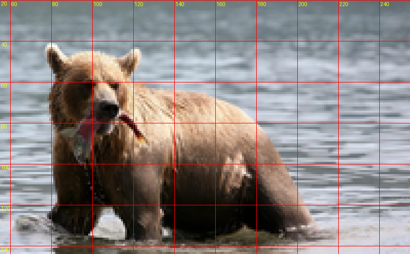
视觉工具实际返回图片 3
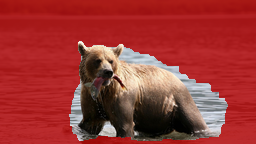
视觉工具实际返回图片 4
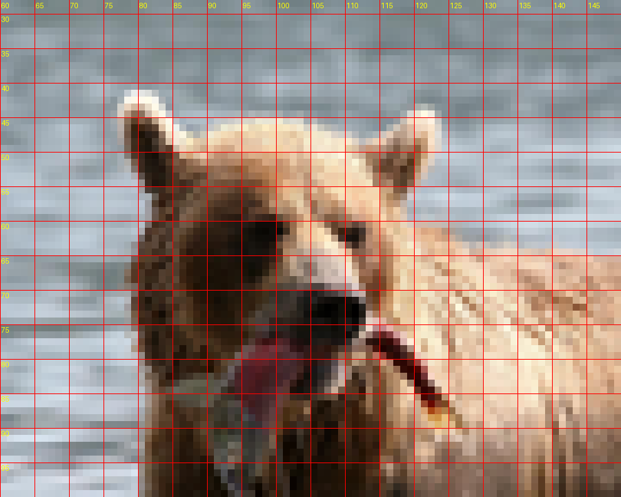
视觉工具实际返回图片 5
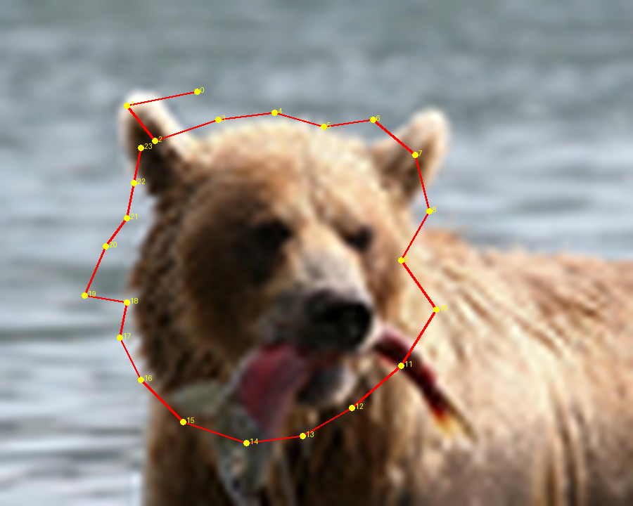
视觉工具实际返回图片 6
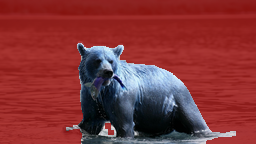
视觉工具实际返回图片 7

视觉工具实际返回图片 8
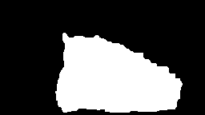
视觉工具实际返回图片 9
视觉工具实际返回图片 10
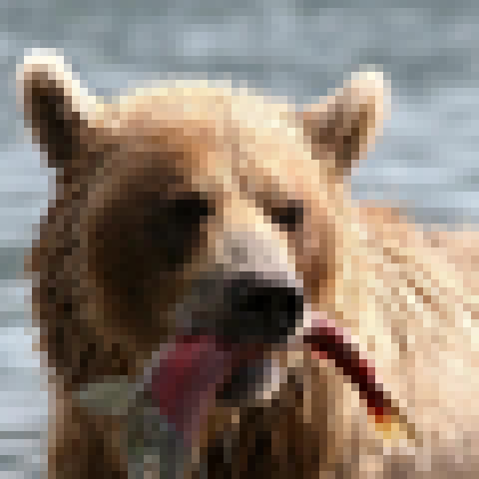
视觉工具实际返回图片 11
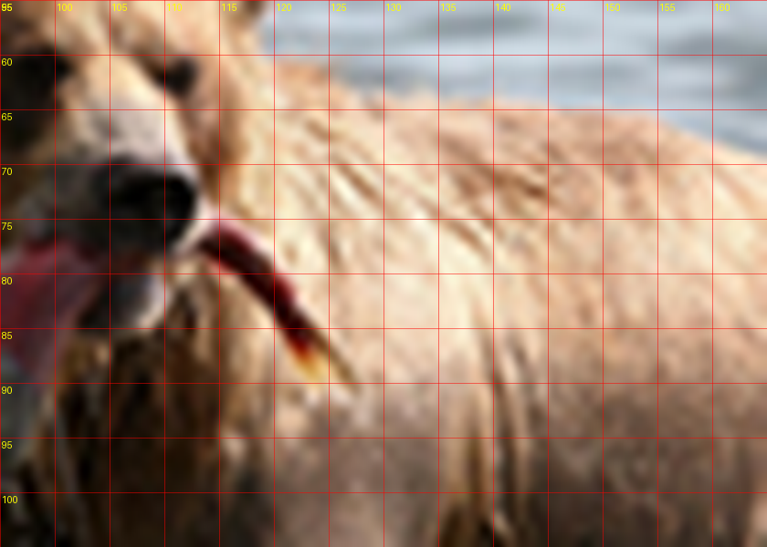
视觉工具实际返回图片 12
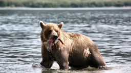
视觉工具实际返回图片 13

视觉工具实际返回图片 14

视觉工具实际返回图片 15
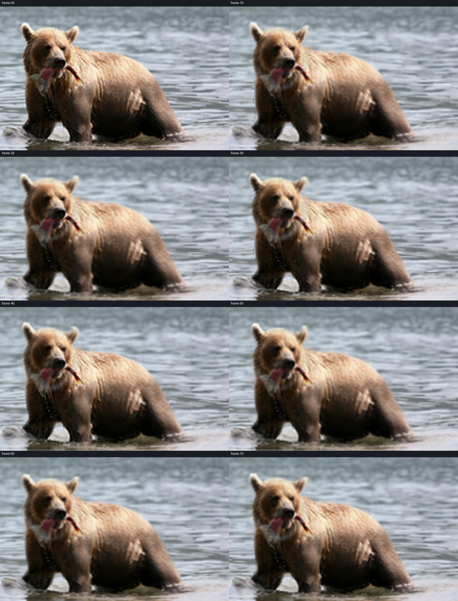
视觉工具实际返回图片 16
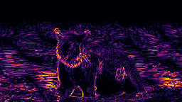
视觉工具实际返回图片 17
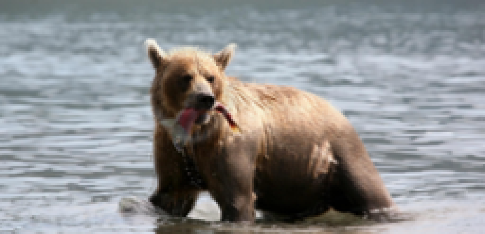
视觉工具实际返回图片 18
视觉工具实际返回图片 19

视觉工具实际返回图片 20
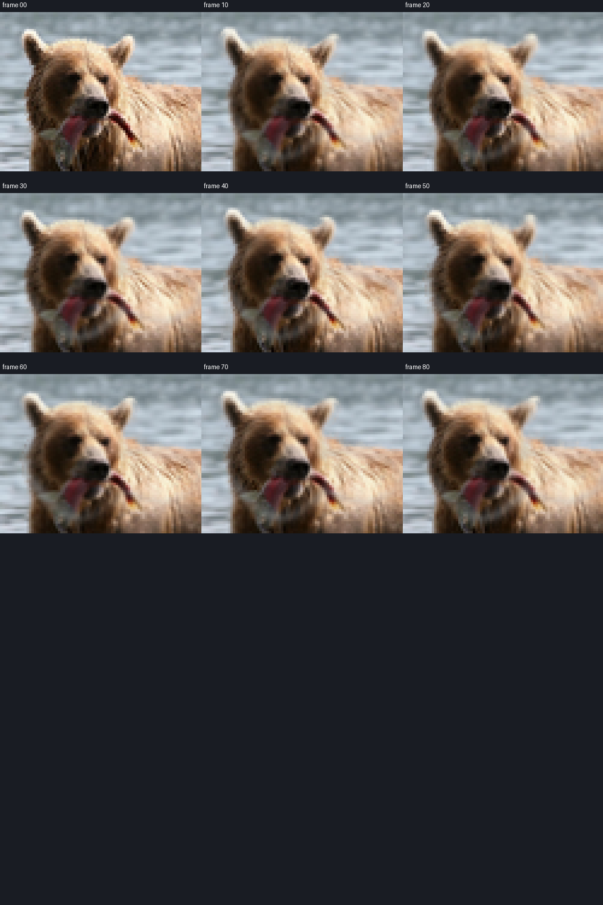
视觉工具实际返回图片 21
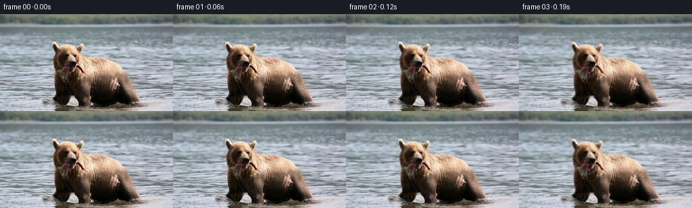
视觉工具实际返回图片 22
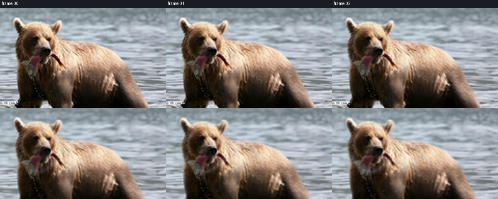
视觉工具实际返回图片 23
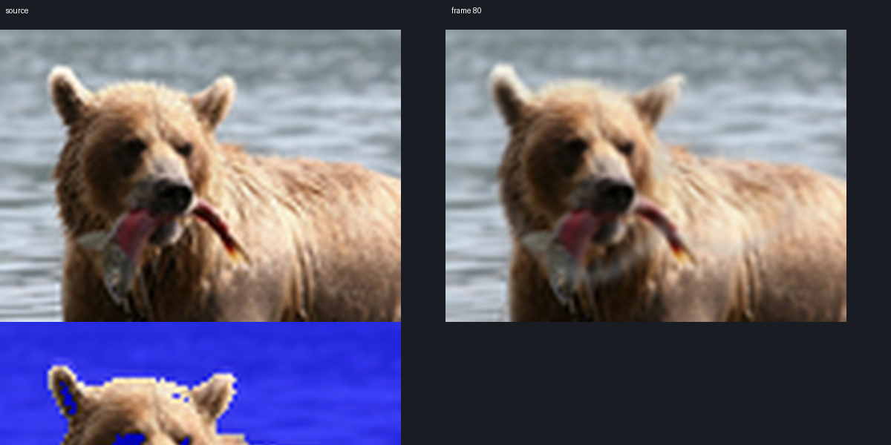
保存候选 5 份；完成命令 29 次；可验证图片返回 23 张。原始 API 响应与完整日志保留在本地。